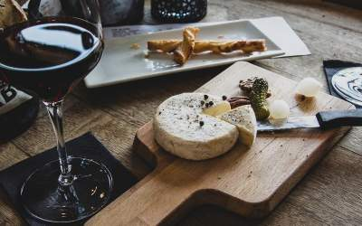
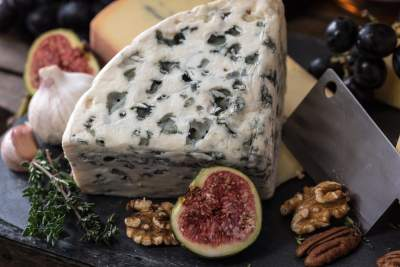
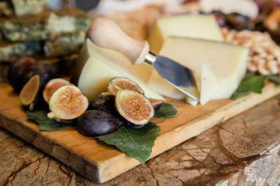

Our Cheeses
We make a variety of plant-based cheeses which are made from fresh local ingredients in NZ
Brie
This Brie is made from cashew milk giving it a smooth creamy texture. Delicious by itself or added to a dish.
Practicing coding captions
Creamy Blue
This Creamy Blue is made from cashew milk giving it a smooth creamy texture. Delicious by itself or added to a dish.
Aged Cheddar
This Aged Cheddar is made from cashew milk giving it a smooth creamy texture. Delicious by itself or added to a dish.
